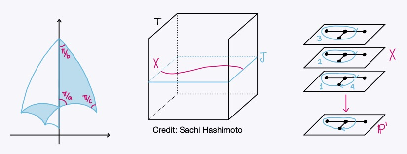

My research focus is computational number theory and arithmetic geometry. I am especially interested in studying arithmetic properties of curves and finding rational points on them. In particular, I work on explicit Chabauty methods to find rational points on curves and I study triangular modular curves, which are generalizations of modular curves.
Articles
A database of basic numerical invariants of Hilbert modular surfaces (with Eran Assaf, Angelica Babei, Ben Breen, Edgar Costa, Aleksander Horawa, Jean Kieffer, Avinash Kulkarni, Grant Molnar, Sam Schiavone, and John Voight). Accepted to Contemp. Math.
Geometric quadratic Chabauty and p-adic heights (with Sachi Hashimoto and Pim Spelier). Accepted to the Edixhoven Memorial Volume of Exp. Math.
Triangular modular curves of low genus (with John Voight). Res. Number Theory. 9:3 (2023), 26 pages.
Other
Here is my master's thesis, Rational points of low degree on Fermat curves through the Jacobian variety.
Here is my undergraduate thesis, Modular forms with applications to quadratic forms (Spanish).